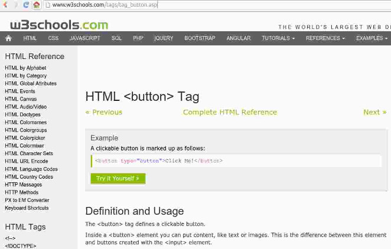

When working on your own project you will have to search how to do something new. Let's imagine we want to put a button but we forgot what is the tag for it.
You have two options: search for "html + the term you want to check" (in this case 'button') or click here. It should look like this:
Let's now take a look at the page. You might have noticed a green button "Try it yourself". Click it and see what happens!